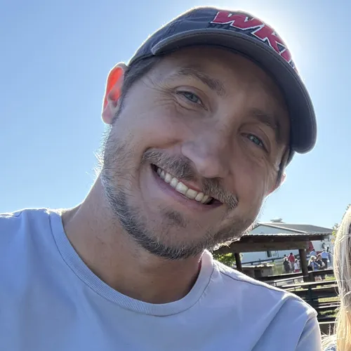

I'm a hands-on designer turning ideas into experiences.
From first sketch to shipped product, I cover it all. Crafting design systems, building mockups, developing in code. Every stage allows me to blend creativity with problem solving.
Available for work
Full stack designer
& Front-end developer.

How it starts
Design That Communicates
From initial research and wireframing through to final UI refinement, I follow a user-centered design approach by crafting intuitive, engaging experiences that work seamlessly across all devices. Every detail is considered, right down to the last interaction and visual flourish, ensuring a pixel perfect handoff for development.
Research
Wireframe
Design
How it ends
Code That Performs
Being a front-end developer as well, I enjoy blending design and code by taking my own concepts and transforming them into polished, performant experiences. Utilizing modern frameworks and technologies, I build products that are as functional and accessible as they are visually compelling.
Develop
Test
Deliver